Látogass el Békéscsaba legszebb épületeihez, múzeumaihoz és természeti csodáihoz.
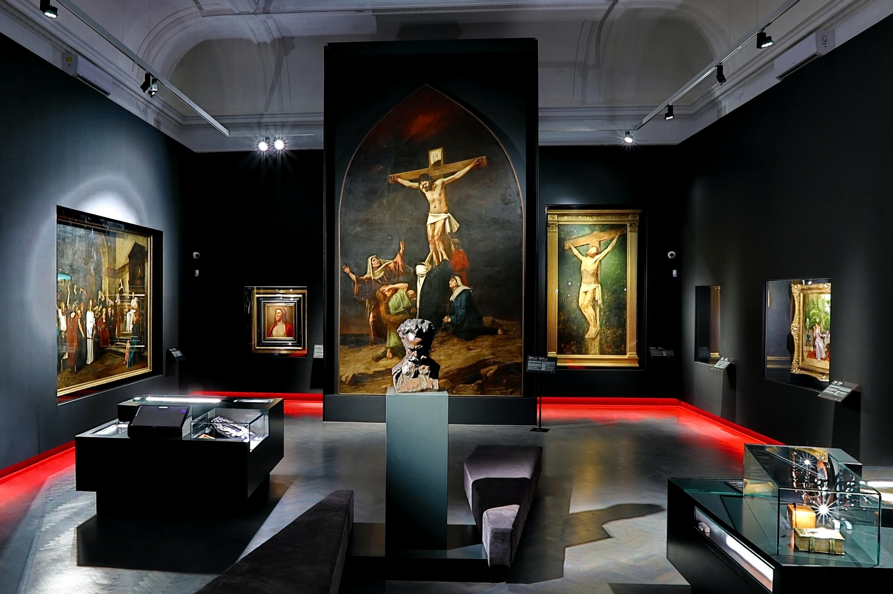
A múzeum a világhírű festő, Munkácsy Mihály életművét mutatja be, valamint a térség régészeti és néprajzi emlékeit. Az állandó kiállítás mellett rendszeresen rendeznek időszaki kiállításokat is.
Széchenyi tér 9.
Kedd-Vasárnap: 10-18 óra
+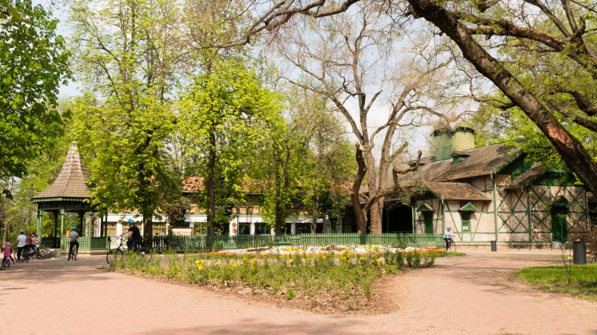
A város szívében található tér számos történelmi épülettel, parkosított területtel és hangulatos kávézókkal várja a látogatókat. A tér közepén álló Szentháromság-szobor 1777-ben készült.
Parkosított tér történelmi épületekkel
Hangulatos kávézók és éttermek
+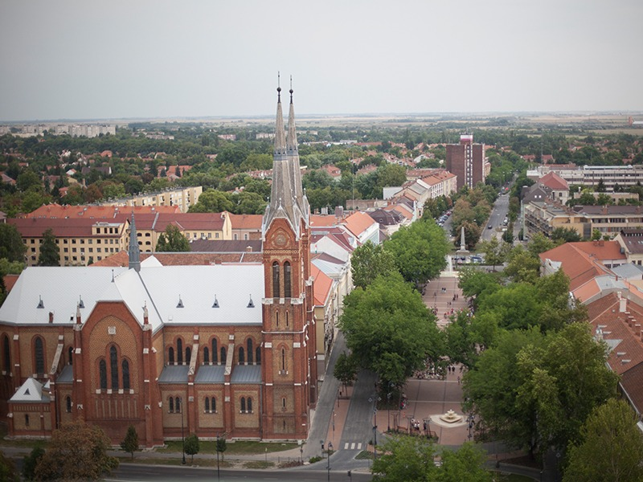
Az 1819-1823 között épült klasszicista stílusú templom a város egyik legszebb építészeti emléke. 54 méter magas tornya messziről látható, és impozáns orgonája rendszeresen hangversenyek helyszíne.
Klasszicista stílusú templom
Hangversenyek és kulturális események
+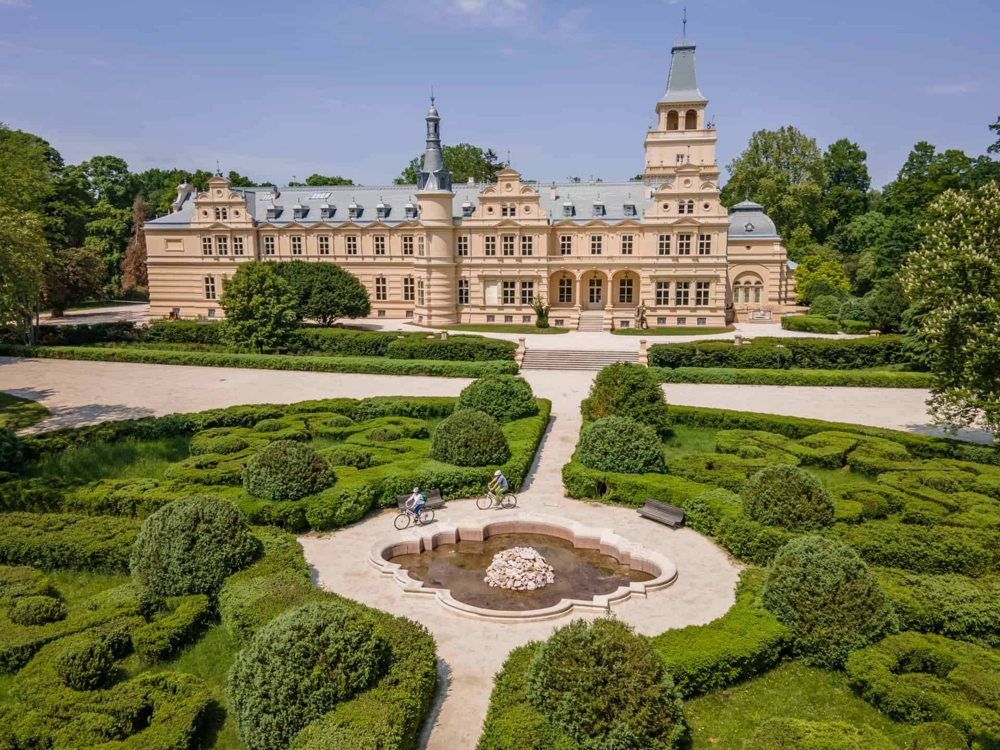
Harruckerni lovag Harrucker (1722-től Harruckern) János György császári élelmezési főhadbiztos, magyar udvari kamarai tanácsos, későbbi Békés vármegyei főispán 1720-ban lett Kígyóspuszta földesura, amikor III. Károly király neki adományozta a Békés vármegye területének nagyobb részét kitevő gyulai uradalmat.
Történelmi kastély múzeummal
Értékes műtárgyak és festmények
+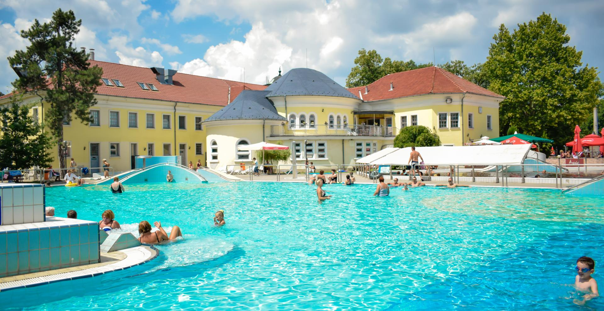
A strandfürdő az Árpád liget szomszédságában, Illés Dávid tervei alapján épült 1922-ben. A strandfürdő kezdetben csupán egyetlen nyitott vasbeton úszómedencéből állt. A meglévő strand Élővíz-csatorna felőli részén az eredeti fedett, török-fürdő jellegű épület 1927-ben épült.
Gyógyhatású termálvizes medencék
Wellness és szauna részleg
+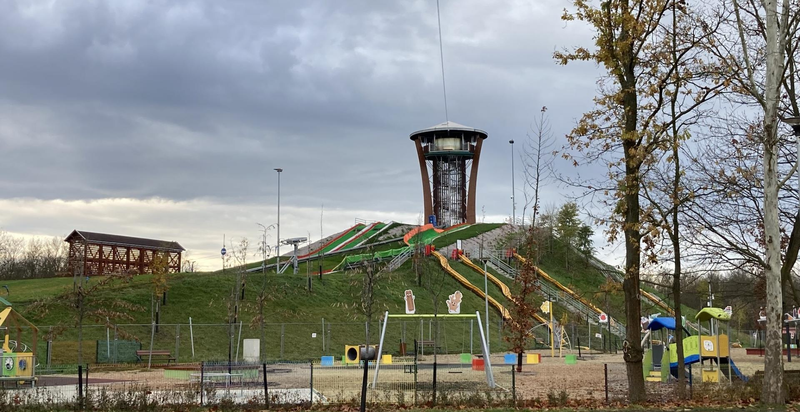
Békéscsaba nevének hallatán a legtöbbeknek a kolbász és a Csabai Kolbászfesztivál ugrik be elsőként. Aligha véletlenül, hiszen „Békéscsaba, a kolbász fővárosa”. A csabai kolbász világhírű hungarikum, a kolbászkészítési hagyományokat ápoló Kolbászfesztivál pedig a térség legnagyobb gasztronómiai rendezvénye. Méltán büszkék mindkettőre a csabaiak.
Hagyományok és népviseletek
Hagyományos paraszti berendezés
+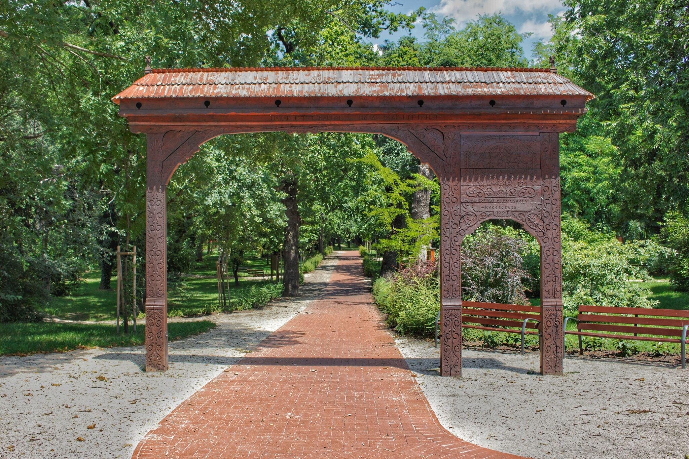
A Széchenyi liget bejáratát az a székelykapu jelzi, amelyet Békéscsaba testvérvárosától, Székelyudvarhelytől kapott ajándékba. 1850-től áll a polgárok szolgálatában. Egykor temető volt, majd “a város mulató erdőcskéje” sörházzal, sétakerttel, gőzfürdővel, kerti pavilonnal, kertészettel, üvegházzal. Bár az 1888-as árvíz elsöpörte, közszolgálati funkciója a mai napig fennmaradt.
Békéscsaba történelmi városközpontjától pár perces sétával juthatunk el az Élővíz-csatornán túli, természetvédelmi területté nyilvánított Széchenyi ligetbe.
Egykoron a végtelen csend birodalma, az evangélikus ó-temető része, amelybe 1776. augusztus 11-én kezdtek temetkezni.
1831-ben a csabai nagy kolerajárvány idején 6 hét leforgása alatt elhunytakat 20 közös sírba temették. Az ó-temető északi oldalán 6 nagy domb alatt nyugszanak a járvány áldozatai. Az ó-temető utolsó halottját, Gaal Károly jegyzőt 1847 őszén temették el. A később épült sörház előtt volt a sírja eperfákkal körül ültetve.
A kolera katasztrófa után alig 15 esztendővel az utódok azon gondolkoztak, a központhoz közeli fekvő temetőből „közmulató” kertet létesítsenek közönség használatára. Erről 1846. július 11-i ülésén döntött a képviselő-testület, majd a következő évben lezárták.
A községvezetés úgy gondolta, a közmulatóhoz sörház is kellene. Jól jött 1850. február 8-án, Berger Izsák regálebérlő ajánlata a községnek, hogy a korcsmáltatási és vásári jog átengedése fejében a liget szélén épít egy sörházat, mely egy főzésre 70 akó sört állít elő. Továbbá felépít egy szeszgyárat, mely egy főzésre 15 akó 30 fokos pálinkát készít. Azon kívül az épület pincéjében gőzfürdőt létesít „gőz-szoba” tusokkal. A helyiségekben a medencéket nagy kerek fakádak fogják helyettesíteni. A fürdő, többszöri községi sürgetésre is csak 1861-ben fogadta első vendégeit.
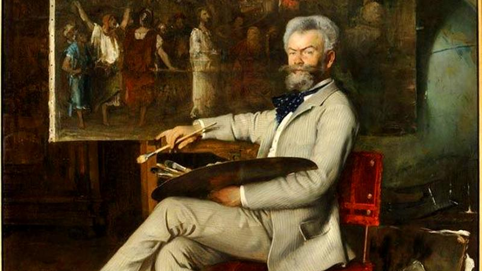
A mai Munkácsy Mihály Múzeumot a festőfejedelem életének 55. évében, 1899-ben alapította a Békéscsabai Múzeumi Egyesület. A hivatalos megnyitásra közel másfél évtizedet kellett várni: a mai is álló, Wágner Lajos, helyi építész által tervezett épület 1913-ra készült el, és az első világháború kitörésének évében, 1914-ben nyitotta meg hivatalosan is a kapuit. Azonban ekkor még nem viselte a festőművész nevét, arra 1951-ig várni kellett. A hivatalos névadást követően, 1959-ben helyezték el a múzeum előtt Borsos Miklós, erdélyi szobrászművész Munkácsy Mihályról készített szobrát.
Az elmúlt fél évszázadban több fejlesztésen is keresztült ment a Munkácsy Mihály Múzeum. Először 1978-ban újabb épületrésszel bővítették, majd az ezredforduló után jelentős modernizáláson esett át. A látogatói élmény fokozásának érdekében 2008-ra megnagyobbították a kiállító tereket, óriási akváriumot helyeztek el, háromdimenziós vetítőtermet építettek ki, érintőképernyőket helyeztek el, valamint külföldi turisták számára is élvezhetőbbé tették a látogatást, ugyanis többnyelvű tárlatvezetést alakítottak ki. A fejlesztések eredményéről rengeteget elárul, hogy 2008-ban a múzeum elnyerte a „Látogatóbarát-Múzeum” díjat.
Legutóbbi fejlesztés, amely a múzeumot is érintette 2017-ben kezdődött meg. Ebben az évben indult el a Modern Városok Program keretében Dél-Alföld első kulturális negyedének, a festőművészről elnevezett Munkácsy Negyednek a kiépítése. A projekt keretében több, Munkácsyhoz köthető köztéri szobrot is átadtak, valamint felújították Munkácsy fiatalkorának egyik meghatározó helyszínét, a Munkácsy Emlékházat is. Jellegzetes épületével és az előtte álló szoborral, valamint állandó és időszaki kiállításaival már a kezdetektől a Munkácsy Negyed egyik meghatározó és kulcsfontosságú része a Munkácsy Mihály Múzeum is.
Hivatalos neve: Páduai Szent Antal Székesegyház római katolikus templom
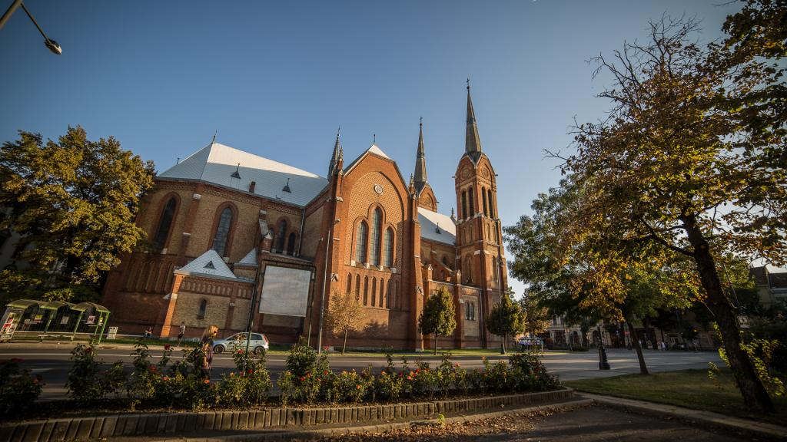
Fedezd fel Békéscsaba gyöngyszemét, a Páduai Szent Antal Székesegyházat, amely a város Főterén található! Ez a neogótikus stílusú templom Békéscsaba második legnagyobb temploma, amely 1910. június 12-én nyerte el szentélyét. Építése során kizárólag csabai téglát használtak, ami különlegessé teszi.
A templom négy harangja között a legféltettebb kincs Krisztus keresztjének egy kis darabja, mely ellipszis alakú keretbe van foglalva. A hármas kapuzaton át léphetünk be, mely fölött a Magyarok Nagyasszonyát ábrázoló üvegmozaik található. A templom rendszeresen ad otthont komolyzenei és ünnepi koncerteknek, így a látogatók nemcsak a szakrális élményben részesülhetnek, hanem a kultúra gazdagságában is. Az épület egész évben szabadon látogatható, így bármikor megcsodálhatjuk a 61 méter magas tornyait. A harangok közül a legnagyobb, a Hősök harangja, 1937-ben készült, míg a Szent István-harang a magyar államalapító halálának 900. évfordulójára készült. A lélekharang pedig 1802 óta őrzi a templom szellemét.
A Nemzeti Kastélyprogram keretében megújult szabadkígyósi Wenckheim-kastély 2022. március óta várja a látogatókat!
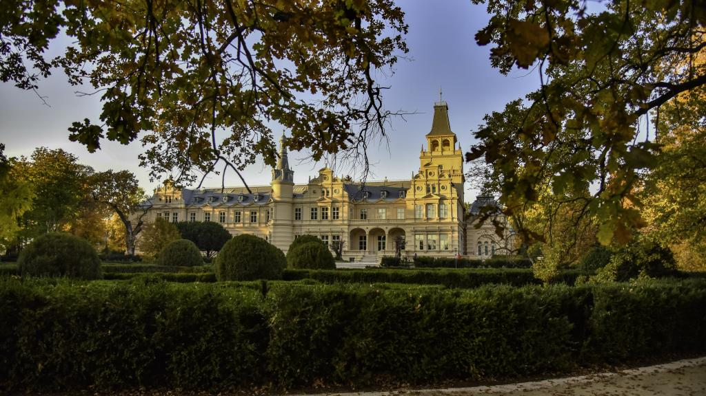
Az elmúlt időszakban a projekt keretében felújításra került a kastély főépületének teljes földszintje, a pince egy része, a főlépcsőház és a kilátótorony, valamint a főépület közvetlen környezete.
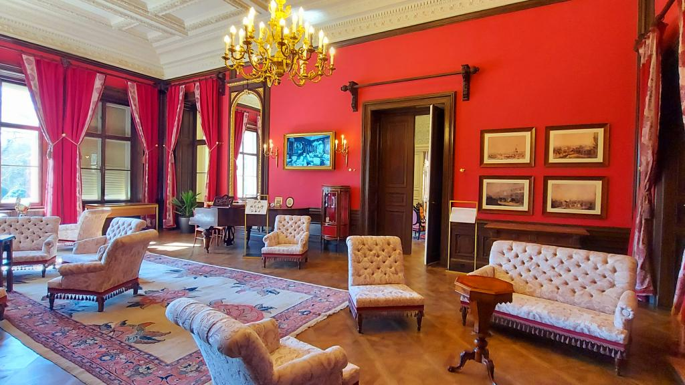
A felújított épületben kialakításra kerül egy interaktív családtörténeti kiállítás, melynek tematikája: „Vendégségben Wenckheiméknél”, valamint kávézó és ajándékbolt, a kastélyparkban pedig egy játszótér létesül.
Nemzeti Kastélyprogramnak köszönhetően a szabadkígyósi Wenckheim-kastély újra a régi pompájával fogadja a látogatókat. Az egykor nagyon precízen vezetett kastélybeli vendégkönyv mintájára elkészül a modern vendégkönyvet rejtő regisztráló terminál. A látogatók számos interaktív játékban vehetnek részt a digitális vendégkártyával. A cél az, hogy mindenki úgy érezze, hogy részt vehet a kastély egykori mindennapjaiban és a saját élményeként élhesse meg a korra jellemző hangulatot.
A könyvtárban ma is látható a kazettás famennyezet, valamint a könyvespolcrendszer. A Kastélyprogram innovatív munkájának eredménye a „mesélő könyvszekrény”, amelynek köteteit érintőképernyőn lehet kiválasztani és az egyes könyvekről készített kisfilmeket vizitkártyával lehet aktiválni. De nemcsak mesélő könyvek, hanem mesélő festmények is lesznek a felújított kastélyban. Megelevenedik a színes litográfia is, amelyen a királyi párt fogadja az akkor nyolcéves Krisztina grófnő.
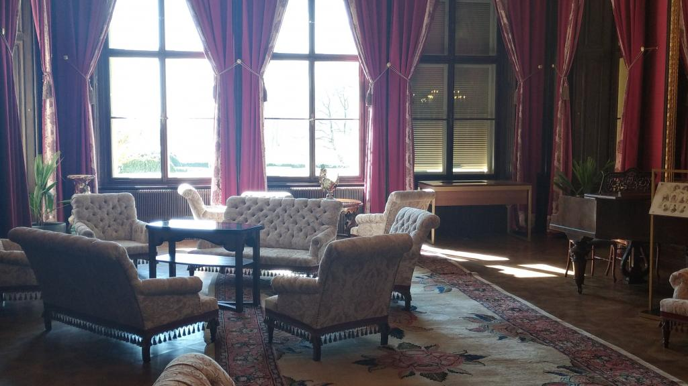
A gyerekek a kastélyban található, vagy az ahhoz köthető festmények bármelyikét kiszínezhetik a digitális rajztáblán, vagy éppen a személyzeti hívóval „hívhatják” a kisfilmekkel megszemélyesített személyzetet.
A kápolnában fény- és hangjáték formájában bárki átélheti a Wenckheim család esküvőinek hangulatát. Aki pedig még több kalandra vágyik, az a repülés élményét is megtapasztalhatja különleges formában.
Az Árpád Fürdőt Békéscsaba belvárosának közvetlen közelében találjuk az Élővíz-csatorna partján. Mindösszesen 11 medence várja a gyógyulni és felfrissülni vágyó vendégeket.
Az élmény- és tanmedencében a pezsgőpadokon, napozó szigeten, pezsgőfürdőben, és örvényben, valamint a két a csúszdán a gyermekeknek és felnőtteknek garantált a jó kedv. A fürdőben a medencék és a sportpályák között a ligetes területen kellemes a pihenés.
A fürdőben 4 darab 76 oC és 40 oC fokos gyógyvízes medence található. A “Jázmin Egészségcenterben” balneológiai kezeléseket, orvosi gyógymasszázst, iszappakolást, víz alatti vízsugármasszázst, víz alatti csoportos gyógytornát kínálnak a gyógyulni vágyóknak. Gyógytornász vezetésével 18 éves kor alatti fiatalok számára csoportos gyógyúszásra is van lehetőség.
Gyógyászati szolgáltatások: reumatológia, orvosi ellátás részleges időben, rehabilitáció. Vízösszetétel: alkálihidrogén-karbonátos, 40 oC-os lágy termálvíz
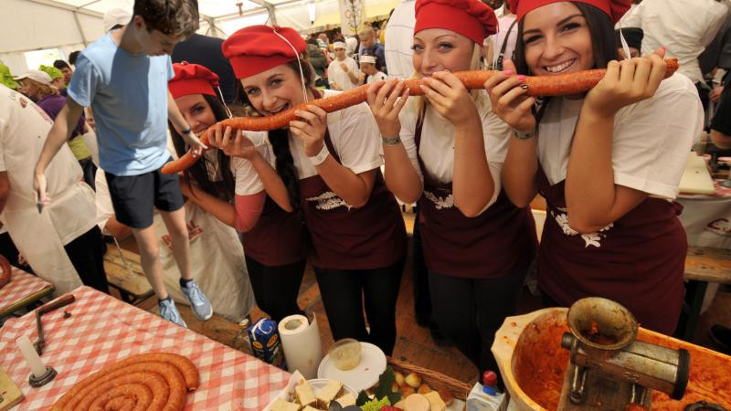
Az eredeti, igazi Csabai kolbász hagyományos népi termék. A csabai élet sajátos tartozéka, amelyhez népi munkafolyamatok és szokások kapcsolódnak. Készítése ma is élő néphagyomány, mely több mint száz éve, generációkon keresztül szinte semmit sem változott.
Ezekre alapozva jött létre a CsabaPark, mely a Csabai kolbász készítésének hagyományait őrző, ápoló és bemutató gasztroturisztikai rendezvényközpont, a Csabai Kolbászfesztivál helyszíne.
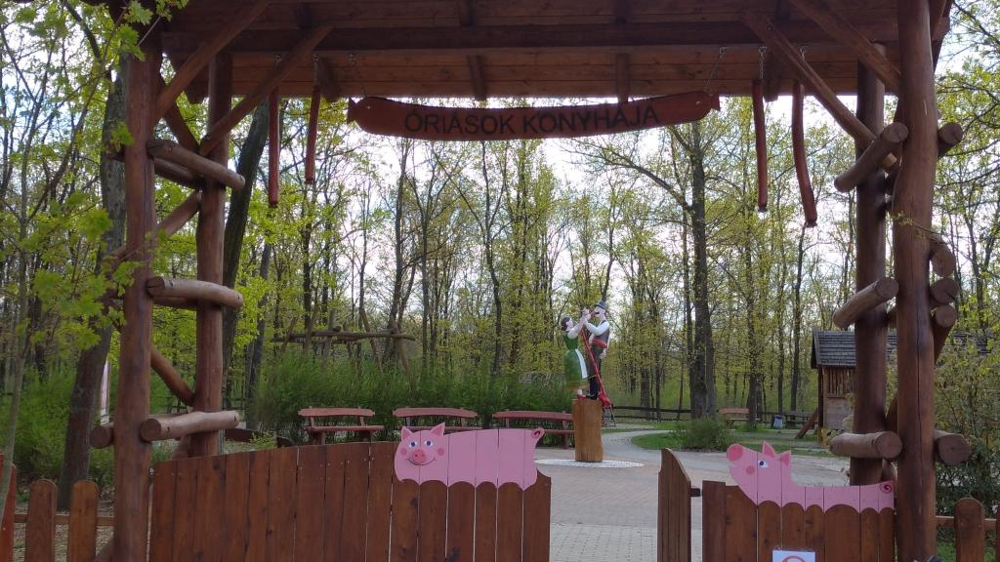
Az “Óriások konyhája” a CsabaPark kuriózuma. A tematikus park kicsik és nagyok számára egyaránt különleges szórakozást biztosít. A kreatív, egyedi ügyességi elemekkel ellátott területen játékos módon ismerkedhetnek meg a kolbász előállításához kapcsolódó hagyományos eszközökkel és építményekkel. Megtalálható itt a kolbászkészítéshez használt húsdaráló és kolbásztöltő méretarányosan nagyított másolata, de fellelhető és ki is próbálható a tanyaudvarok egykor elmaradhatatlan épületei közül a kolbász tartósítására szolgáló füstölő és a kukorica tárolására használt góré épületének makettje is.
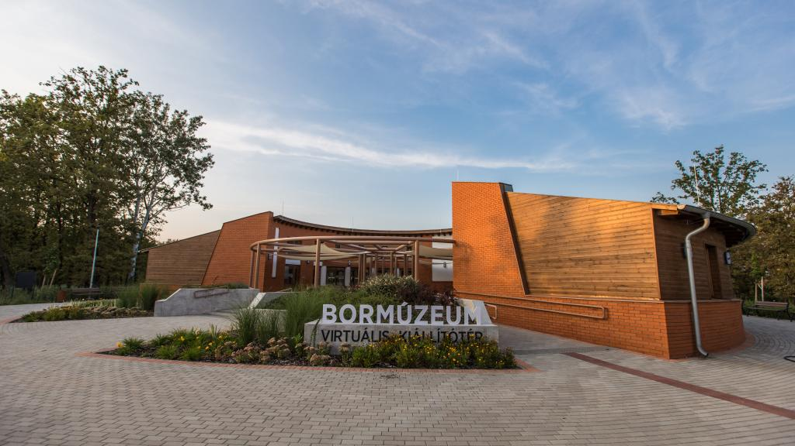
A CsabaParkban, a Körte sor felől érkezve egy fogadóépületet található, ahol az ideérkezők a büfében elfogyaszthatnak egy frissítő italt és élvezhetik a város legbensőségesebb hangulatú zöld teraszát. A Bormúzeumban a szőlőtermesztés és a borkészítés hagyományait mutatják be interaktív eszközökkel, a 330 m2-es modern felszereltségű Pálinkamúzeumban pedig a pálinkakészítés rejtelmeit ismehetjük meg.
A 43 hektáros CsabaPark területén található, gyalogosan és kerékpárral is bejárható erdei ösvények a parkerdő élővilágának megismerésére adnak lehetőséget. A túrautak mellett fedett pihenők és padok a látogatók pihenését és kikapcsolódását szolgálják. Emellett szabadtéri fitnesz park és 4km hosszúságú rekortán borítású futópálya is várja a kikapcsolódni és mozogni vágyó vendégeket.